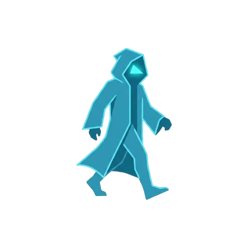

Last updated: March 2026
Voidwalker is a browser extension that connects to a local MCP server running on your own machine. It gives AI coding assistants (Claude, Cursor, etc.) read and write access to your browser's storage state for debugging purposes. The entire system runs locally — no cloud, no telemetry, no external services.
When the extension is active and connected to your local MCP server, it captures:
All captured data is sent exclusively over a WebSocket connection to a local MCP server running
at ws://127.0.0.1:3695 on your own machine. This address is only reachable from
your own computer — it is not accessible from any other device or network.
The connection requires a secret authentication token stored in ~/.voidwalker/token
that only you control. No data ever leaves your machine to external servers, third-party services,
or the internet.
Data is held in memory only for the duration the MCP server is running. It is never written to
disk by the server, with the exception of an optional activity log at
~/.voidwalker/activity.log that records which MCP tools were called (not the full
data values). You can delete this file at any time. Stopping the server clears all in-memory state.
Values whose key names match sensitive patterns such as token, auth,
session, jwt, password, secret, or
apikey are automatically replaced with [REDACTED] in all read outputs.
The raw value is never forwarded unless you explicitly request it via the
decode_storage_value tool.
| Permission | Why it is needed |
|---|---|
tabs |
Read tab IDs and URLs to route storage events to the correct tab |
storage |
Persist your auth token between browser sessions |
cookies |
Monitor cookie changes via chrome.cookies.onChanged |
alarms |
Keep the background service worker alive with a periodic heartbeat |
<all_urls> |
Inject content scripts on every page to intercept storage API calls at
document_start, before any page scripts run. This is required to observe
storage mutations reliably across all sites.
|
Voidwalker does not share data with any third party. The AI client you connect (Claude, Cursor, etc.) receives data through the MCP protocol running locally — what that client does with it is governed by its own privacy policy.
Voidwalker is a developer tool not intended for use by children under 13. It does not knowingly collect data from children.
If this policy changes, the updated version will be published at this URL and committed to the repository. The "Last updated" date at the top of this page will reflect the revision.
Questions or concerns? Open an issue at github.com/mohi-devhub/voidwalker .